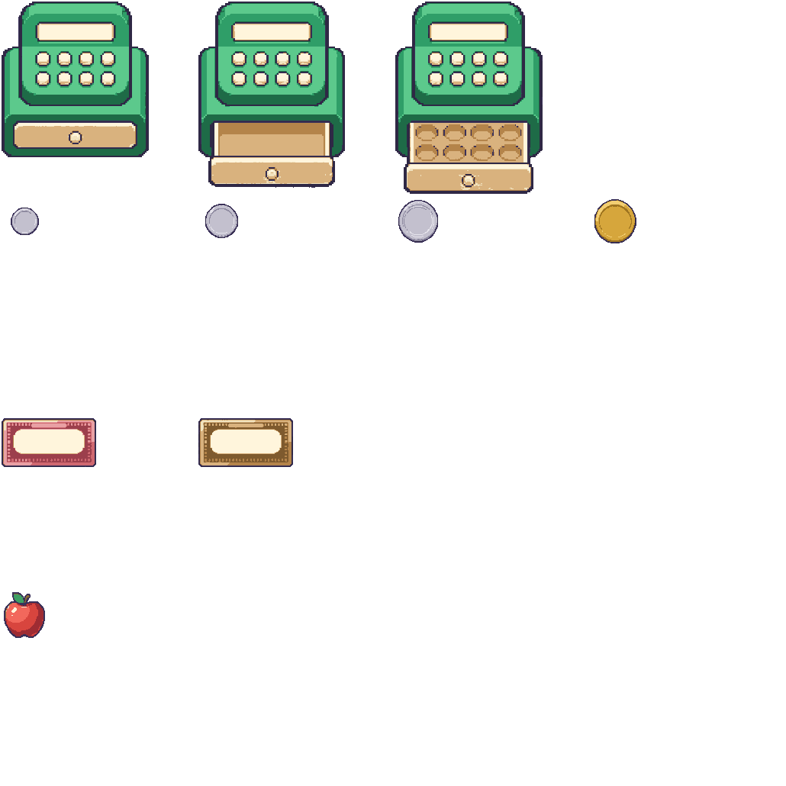

Change Maker only. The pixel treatment was approved on the first three assets, so the Corner Shop set was completed: the till as one interactable machine, the four coin bases, the two note bases and the product. The other eight scenes are still not generated — their sprites wait on the scene-by-scene design, not on this treatment.
Sprites may use lighter/darker ramps derived from their scene accent, paper and outline.
Every ramp used so far is recorded here and in sprites/manifest.json.
apple (calc, change, wordmem)--brain-change| Rule | Value | Pilot result |
|---|---|---|
| Small object grid | 64 × 64 native | apple 64 × 64 |
| Medium prop grid | 96 × 96 or 128 × 128 | note 128 × 128 |
| Wide/large prop grid | divisible by 16 | till 256 × 256 |
| Outline | 1–2 native px, dark plum #3B3159, never black | enforced by palette snap |
| Colours per sprite | 6–10 including outline and highlights | 9 / 8 / 10 / 7 |
| Background | transparent, hard alpha, no soft edge | chroma-keyed, 45% coverage threshold |
| Padding | ≥ 2 transparent native px around the sprite | 2 px, enforced by the crop window |
| Atlas cells | fixed size, 2 native px between cells | 256 px cells, 2 px gap |
| Scaling | image-rendering: pixelated, integer multiples | 1× / 2× / 4× shown below |
| Lighting | soft upper-left, one highlight patch | consistent across all three |
| Depth | front-facing, ≤ 12° implied top view | consistent across all three |
till, 256 × 256 native, 3 framesOne machine, not a register plus a separate drawer. The body's registration point is pinned in
every frame; only the drawer travels. Two named regions in manifest.json tell the scene
where its DOM layers go: display (52,33 · 94×24) carries the price as text, and
drawer (22,163 · 152×52) is where money buttons are laid over the open drawer. The
display and the wells are deliberately blank — no value is ever painted into the art.
steps(3)Integration-ready animation states. One strip serves both
directions: drawer-open plays frames 0 → 2 at 6 fps (≈500 ms, inside the 640 ms
celebrate token) and drawer-close plays the same strip reversed. Under reduced motion
neither steps: the scene jumps to the target frame and the whole transition is a ≤120 ms opacity
change. Sprite frames step; anything that travels uses a smooth transform.
coin, 64 × 64 native, 4 framesNT$1, NT$5, NT$10, NT$50. Every face is a blank disc: the numeral is DOM text centred on top, so nothing about the amount lives in the raster. Rising diameter and silver→gold give a second, non-colour cue on top of the value.
note, 128 × 128 native, 2 framesNT$100 and NT$500. Stylised learning tokens, not currency: no numerals, no portraits, no serial numbers, no security guilloche. The cream centre panel exists so the DOM value has somewhere legible to sit; the dotted border is the only decoration.
apple, 64 × 64 nativeServes the Corner Shop product mat, the Fruit Stand and the Library Desk word card. Price and
NT$ are DOM text placed beside it.
One atlas per scene plus one shared UI atlas. Rows are objects, columns are state/frames, cells are a fixed 256 px with 2 px of transparent separation. Only the Change Maker pilot atlas exists so far.

| File | Size | Bytes | Budget |
|---|---|---|---|
sprites/change.png | 1030 × 1030 | ≈ 32.6 KB | 256 KB per atlas |
| pack total so far | 4 sprites, 10 frames | ≈ 32.6 KB | 900 KB whole pack |
NT$, totals| Candidate | Verdict | Reason |
|---|---|---|
| apple, variant B | rejected | Stem and leaf read as one cluster at 64 px; variant A separates them. |
| standalone register + drawer sprites | superseded | Two objects could never share one open/close animation. Replaced by the single till machine; the source PNGs stay in sprites/src/. |
| till, variant A | rejected | Five wells in one row cannot hold six denominations. Variant B's 2 × 4 well grid takes four coins on one row and two notes on the other. |
| coin strip, variant B | rejected | The generated cells were unequal widths, so equal-width frame splitting would have mis-cut the set. |
| generated cell divider lines | removed | The coin strip arrived with lines drawn on the cell edges. Dropped by insetting each frame's usable area during downsampling, not by painting over them. |
| animation-strip drift | corrected | Bodies drifted several native px across frames. Fixed by pinning each frame's own bounding-box origin, so the registration point holds. |
| generated contact shadows | discarded | They arrived as soft transparency over the backdrop. §3.2 requires short opaque offsets, so contact shadows are authored in CSS. |
| any baked numeral | excluded in every prompt | Coin faces, note panels, the till display and the drawer wells are all deliberately blank. Every value is DOM text. |